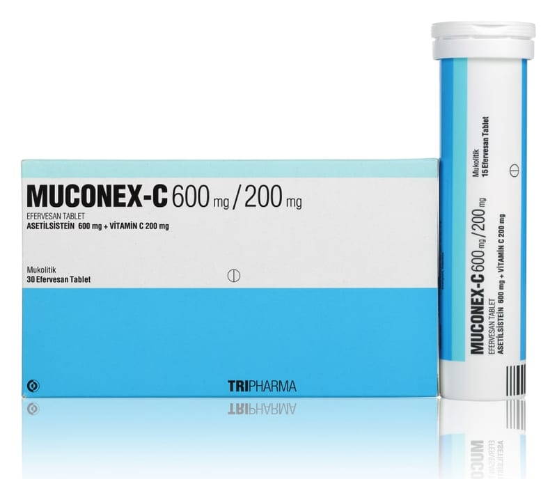

Muconex-C 600 mg/200 mg Efervesan Tablet, 30 Adet

Ne için kullanılır
KT · Bölüm 1MUCONEX-C, beyaz, beyazımsı renkli yuvarlak efervesan tabletlerdir. 30 efervesan tablet, silika jel içeren kapak ile kapatılmış plastik tüp içerisinde piyasaya sunulmaktadır.
MUCONEX-C etkin madde olarak asetilsistein ve askorbik asit içerir.
MUCONEX-C yoğun kıvamlı balgamın atılması, azaltılması, yoğunluğunun düzenlenmesi, ekspektorasyonun kolaylaştırılması gereken bronkopulmoner hastalıklarda, bronşiyal sek resyon bozukluklarının tedavisinde kullanılan mukolitik bir ilaçtır.
Bu ilacı kullanmaya başlamadan önce bu KULLANMA TALİMATINI dikkatlice okuyunuz, çünkü sizin için önemli bilgiler içermektedir.
• Bu kullanma talimatını saklayınız. Daha sonra tekrar okumaya ihtiyaç duyabilirsiniz. • Eğer ilave sorularınız olursa, lütfen doktorunuza veya eczacınıza danışınız. • Bu ilaç kişisel olarak sizin için reçete edilmiştir, başkalarına vermeyiniz. • Bu ilacın kullanımı sırasında, doktora veya hastaneye gittiğinizde doktorunuza bu ilacı kullandığınızı söyleyiniz. • Bu talimatta yazılanlara aynen uyunuz. İlaç hakkında size önerilen dozun dışında yüksek veya düşük doz kullanmayınız.